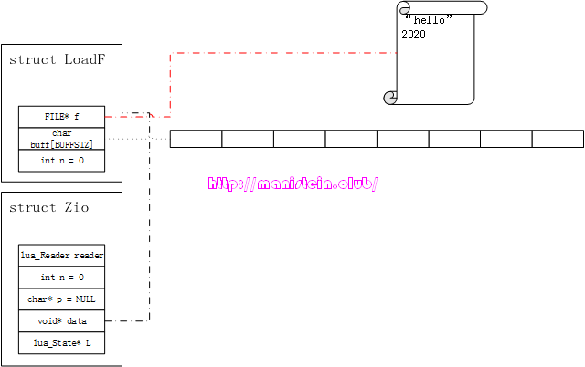
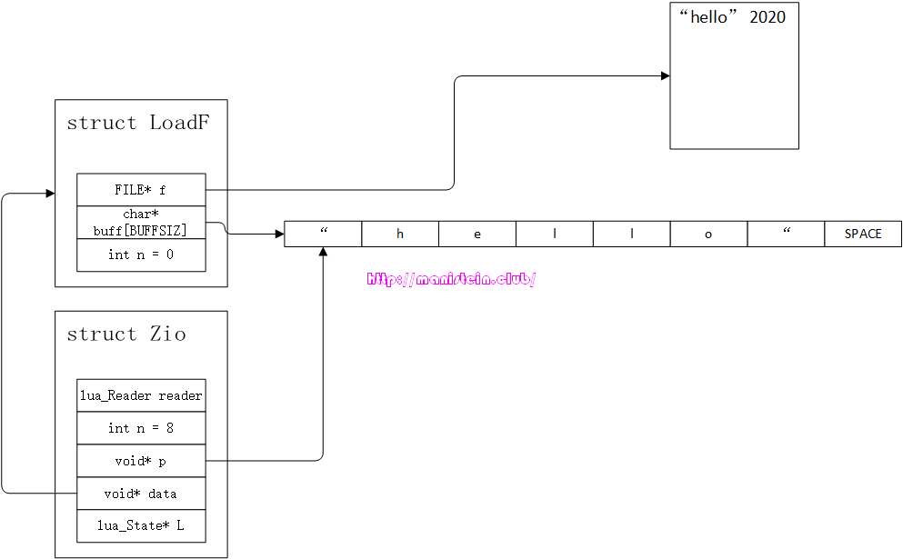
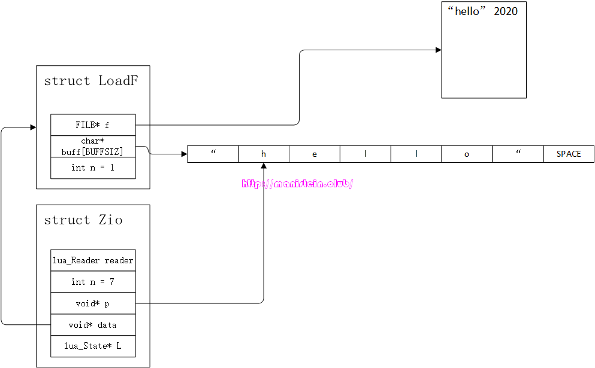
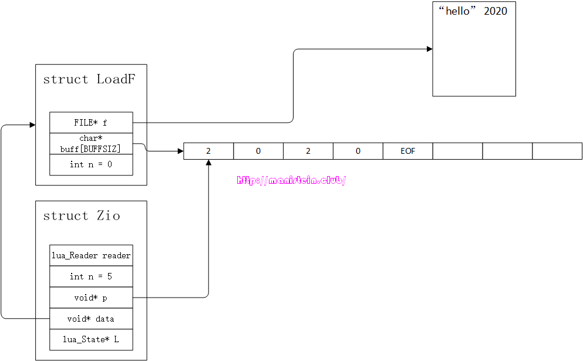

前言
构建Lua解释器Part5，对Lua解释器进行了整体介绍，并且以一个hello world程序为例子，给读者一个初步的概念。通过那一篇，我们知道了编译器至少要包括词法分析其和语法分析器，而本篇，我将集中时间和精力，用来介绍和讲解Lua词法分析器的设计与实现，实际上，它是对Part5词法分析器部分的一个补充。本文所指的词法分析器，是参照Lua-5.3这个版本的源码，并且亲自动手实现和测试过，它也已经被整合到dummylua这个工程中，欢迎大家star。由于整个词法分析是我自己重新实现，因此不会在所有的细节上和官方lua保持一致，最后由于本人水平有限，如有写的不正确的地方，欢迎大家批评指正。此外，我已经建了一个qq群(QQ:185017593)，有兴趣参与技术讨论的同学可以加进来。
词法分析器简介
首先我要对词法分析器作一个简短的介绍，所谓的词法分析器，其实就是对输入的内容(文本、字符串等)进行词法分析的模块。英文维基百科对词法分析的解释如下[1]：
In computer science, lexical analysis, lexing or tokenization is the process of converting a sequence of characters (such as in a computer program or web page) into a sequence of tokens (strings with an assigned and thus identified meaning). A program that performs lexical analysis may be termed a lexer, tokenizer,[1] or scanner, although scanner is also a term for the first stage of a lexer. A lexer is generally combined with a parser, which together analyze the syntax of programming languages, web pages, and so forth.
总而言之，词法分析就是将一串字符，转化为一串token，而词法分析器就是执行这一过程的逻辑模块。
在编译器中，什么是token？token是一门语言中，能够被识别的最小单元。现在来看一个例子，假设我么有一个文件，其内部的内容如下所示：
1 | name "hello" 2020. |
现在要对这个文本进行词法分析，首先我们要做的是，将文本字符加载到词法分析器的缓存中。在完成文本加载以后，我们需要从中，一个一个地获取有效token，而获取token的操作，是通过词法分析器里的一个函数来实现，我们可以假设它叫next函数。我们通过调用next函数若干次，得到以下结果
- 我们通过调用next函数，词法分析器返回第一个有效被识别的token，这个token就是name，它是一个标识符，能够表示变量。
- 然后我们再次调用next函数时，能够获取第二个token，这个token是一个字符串“hello”。
- 当我们第三次调用next函数时，则获取了第三个token，这个token是个数值。
- 当我们第四次调用next函数时，获取一个ASCII符号”.”
- 当我们第五次调用next函数时，获取文本文书标志EOF
从上面的例子中，我们可以看到一些有效的信息。首先是，词法分析需要和文本或者字符串打交道，如果我们的代码是存放在文本中的，那么词法分析器首先要将文本中的代码，加载到内存中。被加载到内存的文本内容，实际上就是一个字符序列。词法分析器需要对这个字符序列进行进一步的提取工作。我们一次只能获取一个有效的token，获取这个token的函数由词法分析器提供，比如例子里的next函数。其次是，我们所称的token，其实能够表示的内容非常丰富，它可以表示标志符，可以表示字符串，可以表是ASCII字符，可以是表示文本结束的EOF标识。正因为token能够表示的内容相当丰富，因此我们需要对token进行分类。实际上，我们一个token，既要表明它是什么类型的，还要表明自己包含的内容是什么，它的结构，在逻辑上如下所示：
1 | Token |
有些token，只是说明类型是不够的，它还需要存储token的内容，比如我们的标识符，需要将组成标识符的内容的字符串存入token的data域中，接下来，我们通过< Type, Data >的方式来表示一个token，那么我们持续调用next函数，并将其打印，则获得如下内容（Type使用lua中使用的定义）：
1 | <TK_NAME, "name"> // TK_NAME表示它是标识符类型 |
从上面的例子中，我们可以感知，token能够表示的内容丰富，有些token通过type就能表示，有些还需要存储其内容在data域，以供词法分析器使用。
本节对词法分析器的简介，就到此结束，后面将展开lua词法分析器的设计与实现的论述。
词法分析器基本数据结构
本节开始介绍dummylua词法分析器的基本数据结构，dummylua的词法分析器，基本参照lua-5.3.5的设计与实现。首先，我来介绍一下lua的Token数据结构：
1 | // lualexer.h |
Token结构中，包含一个int变量token，还有一个Seminfo结构的变量seminfo。其中token字段代表Token实例的类型，而seminfo则用来保存token对应类型的实际值。
lua的token类型，一部分是直接使用ASCII值，一部分是定义在一个枚举类型中。我们现在来看一下，token一共有哪些类型，我们现在来看一下分类：
- EOF：文件结束符，表示文件结束，意为End Of File，使用单独的枚举值TK_EOS
- 算数：+,-,*,/,%,^,~,&,|,<<,>>。由于<<和>>无法使用单独的字符来表示token的类型，因此他们使用单独的枚举值，TK_SHL和TK_SHR
- 括号：(,),[,],{,}
- 赋值：=
- 比较：>,<,>=,<=,~=,==。由于>=,<=,~=,==无法单独使用，因此他们要使用单独的枚举值，TK_GREATEQ,TK_LESSEQ,TK_NOTEQUAL,TK_EQUAL
- 分隔：,和;
- 字符串：’string’和”string”，字符串类型使用TK_STRING
- 连接符：..，因为单个字符无法表示，因此它也是用单独的枚举值TK_CONCAT
- 数字：数值分为浮点数和整数，浮点数使用TK_FLOAT，而整数使用TK_INT
- 标识符：就是我们常说的identity，通常用来表示变量，这种类型在lua中，统称为TK_NAME
- 保留字：local,nil,true,false,end,then,if,elseif,not,and,or,function等，每个保留字，都是一个token类型，比如local是TK_LOCAL类型，而NIL则是TK_NIL，依次类推
此外，词法分析器，遇到空格，换行符\r\n、\n\r，制表符\t、\v等，是直接跳过，直至获取下一个不需要跳过的字符为止。在dummylua中，对Token的类型定义主要分为两个部分，第一部分是直接通过ASCII值来表示，比如’>‘, ‘<‘, ‘.‘和’,‘等，还有一部分通过枚举值来定义，我们现在来看一下枚举值的定义有哪些：
1 | // lualexer.h |
FIRST_REVERSED的值是257，为什么取257开始呢？由于我们有很多token类型（主要是单个字符就能表示的token）是直接通过ASCII值来表示，为了避免和ASCII的值冲突，因此这里直接从257开始。在众多的类型中，只有几种需要保存值到token实例中，他们分别是TK_NAME、TK_FLOAT、TK_INT和TK_STRING，于是我们的Seminfo结构就派上用场了。Seminfo结构是一个union类型，它包含三个域，一个是lua_Number类型，用于存放浮点型数据，一个是lua_Integer类型，用于存放整型数据，一个是TString用于存放标识符和字符串的值。
现在我们对token结构有了一个初步的认识，接下来要介绍则是词法分析器里要用到的最重要的数据结构，它就是LexState结构，其定义如下所示：
1 | typedef struct LexState { |
当我们的编译模块，要对一个文本里的代码进行编译时，首先会创建一个LexState的数据实例。词法分析器的工作，首先是要将代码文件，加载到内存中，被加载到内存中的代码，是一个字符串。词法分析器要做的第二个工作，就是将被加载到内存中的字符串里的字符，一个一个获取出来，并组成合适的token，如果不能组成，则抛出异常。
正如前面所说，词法分析器第一个工作，就是要将代码加载到内存中，作为官方lua-5.3的仿制品，dummylua的词法分析器和官方lua一样，采用一个叫做Zio的结构，负责存放从磁盘中加载出来的代码，其结构如下所示：
1 | // luazio.h |
与官方lua一样，dummylua的Zio结构，并没有限制使用者，用哪种方式来加载代码到内存中。而具体操作的函数，则是函数指针reader指向的函数，我们只要自定义的函数，符合这个签名，就能够被词法分析器调用，另外Zio的data指针，是作为reader函数的重要参数存在的，它同样可以由用户自己定义。不过lua提供了一个默认的LoadF结构，以及一个getF函数，用于将文件里的代码，加载到内存中，我将在接下来的内容中详细讨论。
现在我们抛开具体的代码实现，通过一个实例，将整个流程串联起来，如图1所示，我们现在要将一个文件里的字节流读出，并识别里面的token。

图1识别token的流程，也是需要将源码文件里的字符，一个一个获取出来，第一个被获取的字符，将决定它进入哪个token类型的处理分支之中，事实上lua是通过一个叫做zget的宏，获取字符的，这个宏如下所示：
1 | // luazio.h |
传入这个宏的，是一个Zio结构的数据实例。事实上，我们识别token的逻辑是在一个叫做llex的函数内进行的，这个函数会不断读取新的字符，并且判断应该生成哪个token，下面的伪代码展示了这一点：
1 | // lualexer.c |
从上面的伪代码我们可以看到，词法分析器识别一个token，需要不断从源码文件中，一个一个读取字符，然后判断它可能是哪种类型的token，最后作相应的处理，比如readstring和readnumber操作，就是把有效字符串识和数值别出来，最后存储在LexState结构的Token类型变量t中。readstring函数和readnumber函数内部也会多次调用zget函数，不断获取新的字符，最后生成token。
回到图1的例子，在词法分析器数据结构实例LexState完成初始化的伊始，我们刚完成初始化的Zio结构实例，会关联一个已经打开的文件，这个文件就是LoadF结构中的FILE指针f指定，正如图所示，LoadF类型变量的n值为0，这意味着我们未读取buff中任何一个字符。而buff此时也未存储任何一个文件源码中的字符。现在回头来看看Zio数据实例本身，其void指针，data指向了我们刚刚讨论过的LoadF类型实例，Zio的变量n表示，LoadF结构的buff中，还剩下多少个未读取的字符，char*指针p，应当指向LoadF结构中buff的某个位置，但是现在还是初始化状态，因此它是NULL，至于Zio中的reader函数，主要用于处理从文件中读取字符到LoadF结构的buff中的情况。
回顾一下zget这个宏，当我们第一次调用zget这个宏的时候，它会首先调用一个叫做luaZ_fill的函数来处理，我们先忽略它的具体实现，通过一个情景展示来观察它的逻辑流程。这段逻辑的本质是，因为没有未被读取的字符，因此需要重新到文件里加载。以图1为例，假设BUFFSIZ的值为8，现在我们来看看它的执行步骤：
- 从文件中读取8个字符，到LoadF结构实例中的buff中，此时LoadF中的n值仍然是。
- Zio结构中的n值被赋值为8，指针p被赋值为buff的地址，如图2所示：

图2 - 返回p所指向的字符
- p指针自增1，移动到下一个地址，结果如图3所示：

图3
在这个阶段之后，每次我们调用zget这个宏，就会返回Zio的变量p所指向的字符，并且自增，同时Zio的变量n自减1，LoadF的n自增1。当Zio的变量n为0时，此时如果再调用zget宏，那么说明LoadF中的buff的字符已经被取完了，因此需要重新从磁盘获取BUFFSIZ个字符，得到图4的结果。

图4然后和前面概述的一样，返回p所指向的字符，并且p指针自增，LoadF的n值加1，Zio的n值减1。
现在我们来看一下luaZ_fill函数的实现：
1 | // luazio.c |
而这里的reader函数，在是在luaaux.c文件里，名称为getF函数：
1 | // luaaux.c |
这里的逻辑非常清晰，每当Zio结构里，字符被取完的时候，就需要调用luaZ_fill函数，该函数会通过reader函数，获取新的字符缓存，以及缓存的字符数量，然后返回p指针所指向的字符，最后p指针向前移动一位，n变量减1。这里的reader函数，实际上就是getF函数。结合上面描述的流程，要读懂这两段代码并不难。
我们之所以要用到Zio这样的结构，主要的原因是词法分析器，需要从源码文件中，一个一个获取字符，如果每次都要走io，那么效率将会非常低，但是如果每次都将所有的代码加载进来，并且缓存，如果代码中，某个block有词法错误，整个词法分析的流程就会中断，如果文本较大，且位于开头的token识别起来就有问题，那么花费时间在io处理上就是极大的浪费，因此这里采用的策略就是，一部分一部分地加载到代码缓存中。
到目前为止，我就完成了lua词法分析器的基本数据结构的说明了，接下来将会对lua词法分析器的常用接口，初始化流程，和token识别流程进行说明。
词法分析器的接口
在了解了词法分析器的数据结构以后，我们现在来看看，词法分析器一共有哪些主要的接口，现在将接口展示如下所示：
1 | // 模块初始化 |
接口非常简洁，无非就是初始化和获取下一个token的接口。
初始化流程
在完成了lua词法分析器的讨论以后，我们现在来看一下词法分析器的初始化操作。词法分析器首要要做的初始化处理，即是对保留字进行内部化处理，由于保留字全部是短字符串，因此TString实例的extra字段不为0，并且值为对应token类型的枚举值。这样做的目的是，由于我们经过内部化的短字符串会被缓存起来，因此当我们识别到保留字的token的时候，会从缓存中直接获取字符串TString实例，通过这个TString实例的extra字段，我们可以直接获得其token类别的枚举值，方便我们在语法分析时的处理。
我们现在来看一下，lua词法分析器的初始化逻辑：
1 | // lualexer.c |
我们可以看到，初始化阶段，会创建保留字的字符串，由于保留字的字符数均少于40字节，因此他们属于短字符串，并且能够内部化。init函数对这些字符串，进行了脱离gc管理的操作，其本质就是从allgc列表中，移到fixgc列表中，避免这些保留字字符串被gc掉。回顾一下Part3，我们可以知道，当TString为短字符串时，extra字段不为0，则表示不能被gc，并且这个值现在被赋值为保留字类型的枚举值。我们的词法分析器初始化操作，主要是在创建lua_State实例的函数lua_newstate里调用的。
我们在加载一段lua代码，并且开始编译的时候，需要创建一个LexState的结构，并且初始化它，初始化它的操作，在luaY_parser函数中，这个函数主要用来编译lua代码的：
1 | // luaparser.c |
上面调用luaX_setinput函数，则是对词法分析器实例进行初始化操作：
1 | // lualexer.c |
这里的初始化操作很简单，主要是做一些赋值操作，前面介绍数据结构的时候，有对LexState结构进行说明，这里不再赘述。
Token识别流程
词法分析器，将在语法分析器内被使用，语法分析器要调用一个新的token，需要调用luaX_next来实现，我们现在来看看luaX_next函数的定义：
1 | // lualexer.c |
我们可以看到，如果lookhead里有存token的信息，那么就直接返回给LexState的token变量t，否则直接调用llex函数来识别新的token：
1 | // lualexer.h |
从上面的代码中，我们不难看出，对于单个ASCII字符就能表示的token，llex函数基本上是直接返回的，对于那些需要多个字符组成的token，llex函数，则是返回在枚举类型里定义的枚举值，比如TK_LESSEQUAL，TK_GREATEREQ等。这些都比较简单，不过需要进行特殊处理的类型，则是TK_INT，TK_FLOAT，TK_STRING和TK_NAME。
如果token首字母是0~9，那么判定分支则走入识别数值的分支之中，紧接着判断第二个字母是否是x或者是X，如果是，那么判定它是十六进制的数值，我们通过str2hex函数来进行处理：
1 | // lualexer.c |
上述代码的save操作，则是将ls->current所存储的字符，存入到LexState结构MBuffer类型的buff缓存中。词法分析器会不断调next(内部调用了zget宏)函数，并判断它是不是16进制的字符，如果是，则存储到buff缓存中，直到第一个不是16进制字符为止，我们则需将buff缓存里存储的字符，通过strtoll函数，转化为一个整型变量，并存储在ls->t这个表示当前token的变量之中，同时它的类型被设置为TK_INT。
如果token首字母是0~9，并且紧随其后的第二个字符不是’x‘或者’X‘时，那么我们则进入到识别整型数值或者浮点型数值的逻辑之中了，此时调用str2number函数来进行操作：
1 | // lualexer.c |
这里同样会不断将字符存储到MBuffer类型的buff变量中，直至有一个字符不是0~9的字符或者’.‘为止，而后会进入到讲buff中的字符串转为数值的操作。函数会判断buff中是否包含’.‘，如果有且只有1个，那么转化为数值的操作则是将字符串转化为浮点型数据，如果没有，则进入到将字符串转化为整型数据的操作。
识别字符串则简单得多，如果首字母是’\‘‘或者’\“‘，那么则进入到字符串识别流程之中，这些操作则由read_string函数来执行：
1 | // lualexer.c |
整个逻辑也很简单，只要没有遇到delimiter字符（’\‘‘或者’\“‘），除了一些转义字符会做特殊处理（两个字符合成一个字符），其他的字符都会直接存到MBuffer类型的buff数组中，直至遇到delimiter字符，此时会根据buff中的字符串，去生成一个TString类型的字符串，并存到token的seminfo变量中，这里需要注意的是，delimiter字符本身不存入buff中。
识别标识符(identify)也是简单的多，其开头必须是alphabet字符，或者是’_‘，然后接下来的字符，只要是alphabet、下划线或者数字的其中一种，它都会被存储到MBuffer类型的buff变量中，直至条件不成立，此时会将buff传入luaS_newlstr函数中去生成一个TString类型的字符串，如果字符串是个保留字，那么返回extra字段的值，这表示它的token类型的值，由于保留字是特定的，因此我们只需要extra所代表的值（token类型的枚举值）即可。如果字符串不是保留字，那么新生成的TString字符串则会被保存到seminfo变量中，并且token类型为TK_NAME。
一个测试用例
在文章的最后，我通过一个测试用例来展现词法分析器的分析结果，对part06.lua脚本中的代码，进行解析，获得的打印，则在下方展示。测试代码在p6_test.c中。
1 | -- part06.lua |
保留字会在开头加上”RESERVED:“的开头，而单个ASCII字符就能展示的token，则是直接打印，其他的会打印枚举定义。
1 | ? |
结束语
本章节，我用一些篇幅讨论了词法分析器的设计与实现，实际上part5已经有对词法分析器进行一些必要的概述了，我这里是对part5进行一些补充，目的是为了能够让读者对lua的词法分析器有更深刻的认识。下一篇开始，我将开始论述lua语法分析器的设计与实现。
Reference
[1] Lexical analysis